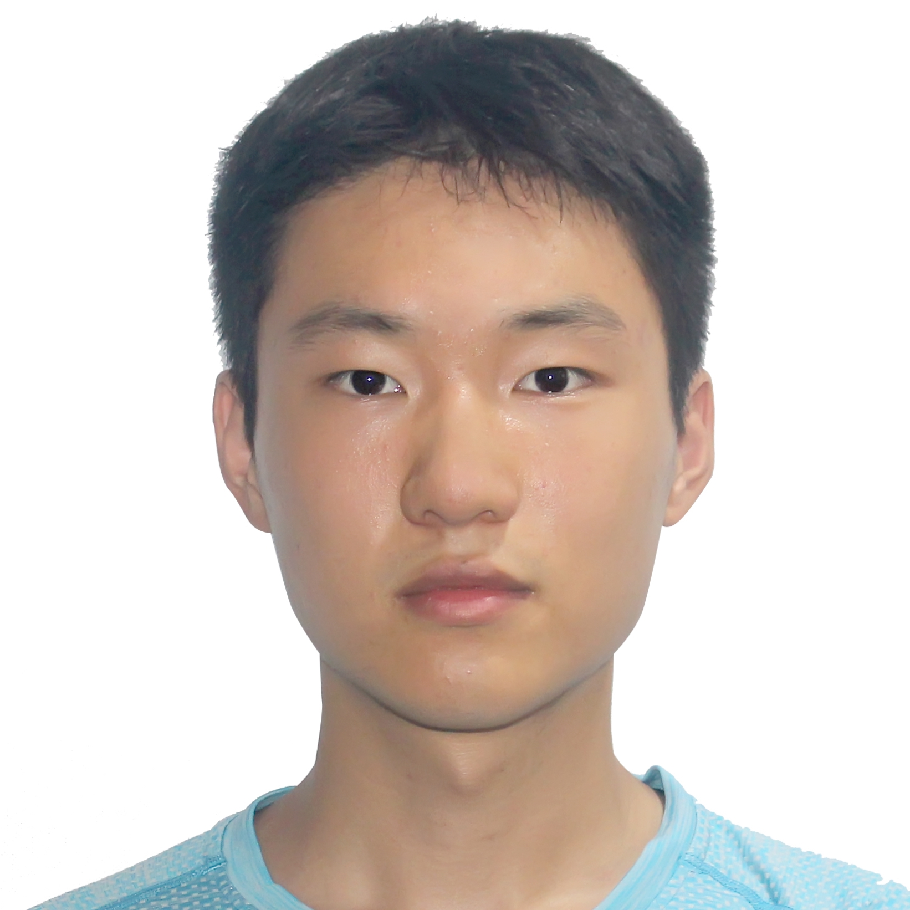

Siyuan (Wilson) Sun孙思源
Undergraduate Student @ University of Arizona 人工智能/计算机科学本科生 @ 亚利桑那大学
About Me关于我
I am an undergraduate student at University of Arizona, majoring in AI/CS. Currently, I am conducting Natural Language Processing (NLP) research at CLULab and advised by Prof. Mihai Surdeanu. I am also a research intern at SJTULUMIA Lab, advised by Prof. Zhouhan Lin. 我是就读于亚利桑那大学的本科三年级学生，主修人工智能/计算机科学。目前，我主要在CLULab进行自然语言处理（NLP）研究，有幸接受Mihai Surdeanu 教授的指导。同时我正在上海交通大学的LUMIA Lab实习，有幸接受执导林洲汉教授的指导。
My general research interests lie at the intersection of Large Language Models (LLMs) and Information Retrieval (IR), with a specific focus on Memory Mechanisms, Model Alignment, and the application of Reinforcement Learning in NLP. 我的研究兴趣集中在大语言模型 (LLMs) 与信息检索 (IR) 的交叉领域，重点关注记忆机制、模型对齐以及强化学习理论在NLP中的应用。
I am preparing for Fall 2027 Ph.D./Master applications in NLP and Machine Learning. I am also actively seeking Internship Opportunities in both academia and industry, starting from fall 2026. If you have an open position that aligns with my profile, I would be delighted to connect. 🤝 我正在寻找2027年秋季入学的博士或硕士项目机会（NLP与机器学习相关方向）。我也正积极寻求26年秋季开始的实习机会。如果您有与我的背景相契合的职位空缺，我将非常乐意与您取得联系。🤝
Education教育经历
B.S. in Artificial Intelligence 人工智能 理学学士
- GPA: 4.0/4.0 GPA: 4.0/4.0
- Relevant Coursework: Deep Learning for NLP, Neural Networks, Reinforcement Learning, Principles of ML, Text Retrieval and Web Search, etc. 相关课程：自然语言处理深度学习、神经网络、强化学习、机器学习原理、文本检索与网络搜索等。
B.S. in Artificial Intelligence 人工智能 理学学士
- Transferred to University of Arizona 转学至亚利桑那大学
Experience专业经历
Research Intern 研究实习生
Undergraduate Research Assistant 本科生研究助理
- Generalization-aware optimization of Transformer-based Language Models Transformer架构的语言模型可泛化调优
- Architectural Innovations in Neural Retrieval Systems 以神经网络为基础的信息检索架构创新
Technical Skills & Research Competencies 技术技能与科研能力
Deep Learning & NLP Research 深度学习与自然语言处理科研
Transformer-based Language Modeling: LLMs (Qwen, Llama, GPT), BERT (RoBERTa, Sentence-BERT, Cross-Encoders).
Neural IR: Dense Retrieval, Query Expansion, Reranking, End-to-end Joint Optimization of Retrieval Pipelines. 模型对齐： 有监督微调 (SFT)、强化学习对齐 (PPO/DPO)、奖励引导对齐、基于 EM 算法的生成模型优化。
语言建模： 大语言模型 (Qwen, Llama, GPT)、BERT (RoBERTa, Sentence-BERT, Cross-Encoders)。
神经信息检索： 稠密检索、查询扩展、交叉编码重排序、检索流水线的端到端联合优化。
ML Engineering & Infrastructure 机器学习工程与基础设施
Vector Databases & IR: FAISS (HNSW/IVF), Milvus, Elasticsearch/Lucene (BM25), Open-source Foundations (BGE, Jina).
Optimization: Multi-GPU Parallel Training, Mixed Precision Training (FP16/BF16), CUDA-level memory management (OOM handling). 框架： PyTorch, Hugging Face (Transformers, Accelerate, PEFT, TRL), Scikit-learn, LangChain。
向量数据库与检索： FAISS (HNSW/IVF), Milvus, Elasticsearch/Lucene (BM25), 开源检索基础模型 (BGE, Jina)。
性能优化： 多显卡并行训练、混合精度训练 (FP16/BF16)、CUDA 显存管理与大规模实验 OOM 调优。